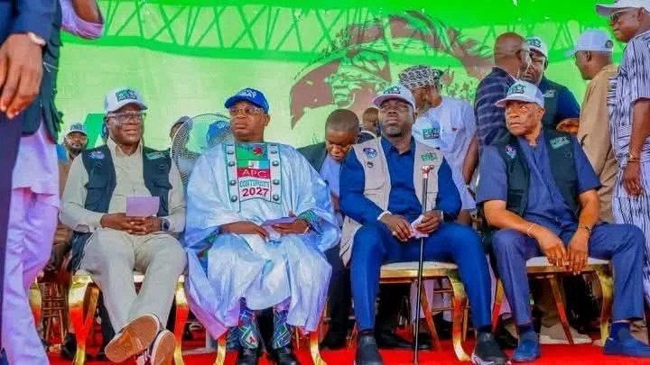

2027: Adeleke, Oyetola unite for Tinubu, unveil Tompolo-donated vehicles

Osun State Governor Ademola Adeleke and Marine and Blue Economy Minister Adegboyega Oyetola joined supporters in Osogbo on Saturday to inaugurate 30 vehicles for President Bola Tinubu’s re-election campaign. The vehicles were donated by Government Ekpemupolo, known as Tompolo, convener of the PBAT Door-to-Door Movement. APC and Accord Party supporters attended, alongside party and state officials.
Adeleke’s address was read by Deputy Governor Kola Adewusi. It urged supporters from different parties to set aside past disagreements and work together for Tinubu’s re-election, with a stated goal of securing between 1.5 million and two million votes in Osun. Adeleke said the alliance was for the presidential contest only; each partner would campaign separately for its candidates in legislative races. He also called on campaigners to discuss federal projects in Osun and the potential benefits of national economic reforms.
Bola Oyebamiji, delivering Oyetola’s address, said support for Tinubu had grown beyond the APC’s traditional base. He described the cross-party effort in Osun as evidence that the re-election campaign went beyond individual and party interests, and said the state’s target was 1.5 million votes. Oyetola also urged voters to support APC candidates for the National Assembly and state legislature. APC National Secretary Ajibola Basiru cited NELFUND and federal road projects in Osun as initiatives voters should consider.
Kestin Pondi, managing director of Tantita Security Services Nigeria Limited, represented Tompolo at the event. He said the vehicles were equipped with speakers, generators and amplifiers, and that additional resources would be provided to support grassroots campaigning. Osun campaign coordinator Timothy Olanrewaju pledged maximum support for Tinubu. The event marked a public collaboration between Adeleke and Oyetola’s political camps, although the source material notes the two leaders had maintained some distance at earlier campaign events.
Source: Punch